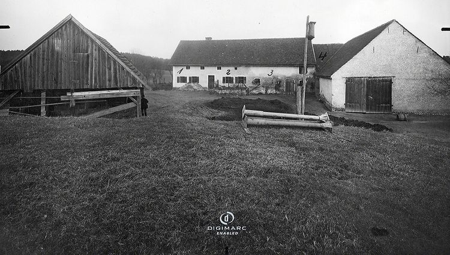

사건은 1922년 3월 31일 금요일 저녁에 발생했다고 추정되지만,
정확하게 무슨 일이 일어났는지는 알 수 없다. 단지 현장의 상황으로 추측만 할 뿐이다.
피살자는 농장주 63세 안드레아스 그루버(Andreas Gruber), 부인 72세 체칠리아 그루버(Cäzilia Gruber) ,
딸 35세 빅토리아 가브리엘(Viktoria Gabriel), 빅토리아의 두 자녀(7세 체칠리아Cäzilia, 2세 요제프Josef),
그리고 농장의 고용인 44세 마리아 바움가르트너(Maria Baumgartner), 총 6명이었다.
마리아는 사건이 벌어지기 불과 몇 시간 전에 이 농장에 도착했다.
피살자들은 모두 곡괭이에 머리를 강타당해 살해되었다. 그루버 부부와 딸 빅토리아 가브리엘,
어린 체칠리아는 헛간에서, 요제프와 마리아는 집 안에서 발견되었다.
이로 미루어 보면 범인(혹은 범인들)은 그루버 부부와 빅토리아,
어린 체칠리아를 어떤 수단으로든 헛간으로 유인하여 살해하고, 집 안으로 들어가
어머니 침실의 아기침대에서 잠든 요제프와 하녀 방에 있던 마리아를 죽였다고 추정한다.
그러나 시신은 늦게 발견되었다. 토요일과 월요일에 어린 체칠리아는 학교에 나와야 했지만 등교하지 않았고,
일요일에는 가족들 중 아무도 성당 미사에 나오지 않았다. 화요일(4월 4일)에 기계수리공이 농장을 방문해
5시간 동안이나 기계를 고쳤지만, 농장 사람들 중 어느 누구도 나오질 않았다.
수리공이 이상하게 여겨 카이펙 마을 사람들에게 이야기하자,
주민들도 '힌터카이펙 농장 사람들이 도통 보이질 않는다.'고 의아하게 생각하여 몇 명이 농장에 찾아왔다.
방문자 중에는 우편배달부도 1명 있었는데, 자신이 토요일에 넣어둔 우편물이 그대로 있음을 발견했다.
주민들은 농장에 들어온 뒤 농장 내 모든 건물의 문이 잠겼음을 알아차렸다.
주민들이 헛간 문을 뜯고 들어가자 시체 4구가 발견되었고,
이어 집안 문을 뜯고 들어가자 나머지 시체 2구가 발견되었다.
마을 주민들이 화요일이 되어서야 농장에 가본 이유는
힌터카이펙 농장이 마을에서 1 km 떨어진 외딴 곳에 있는 데다,
안드레아스 그루버가 괴짜이자 구두쇠로 취급받아 마을 사람들과 평소 사이가 안 좋았기 때문이라고 한다.
